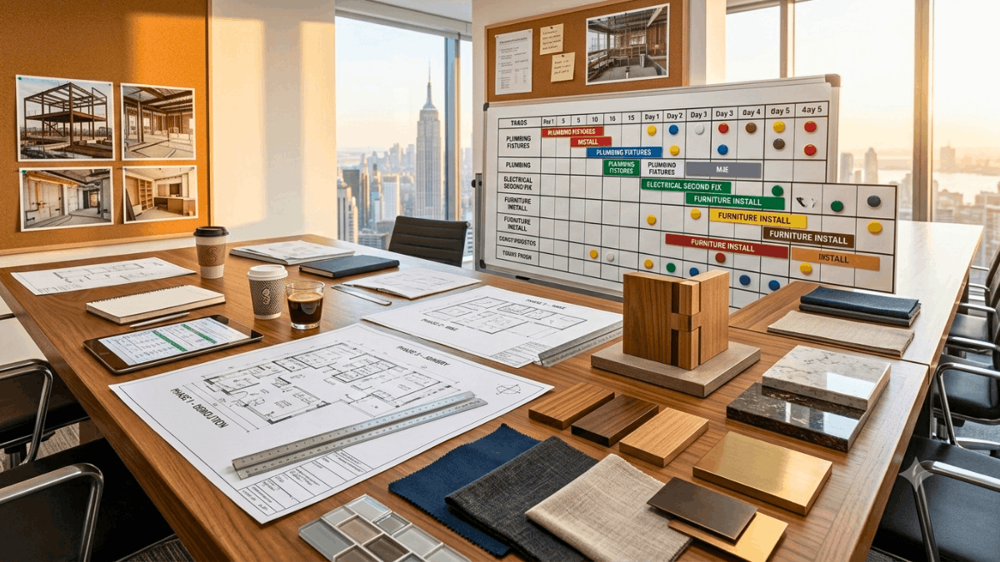
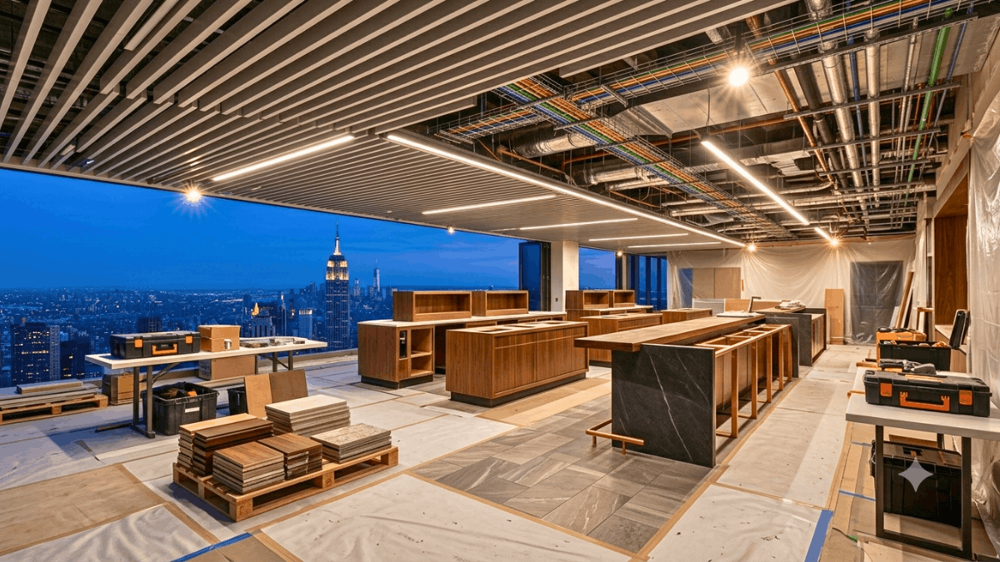
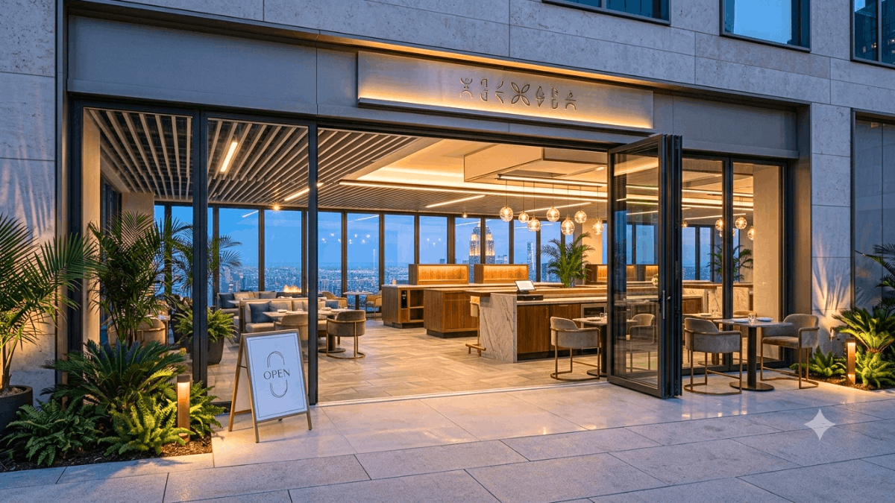
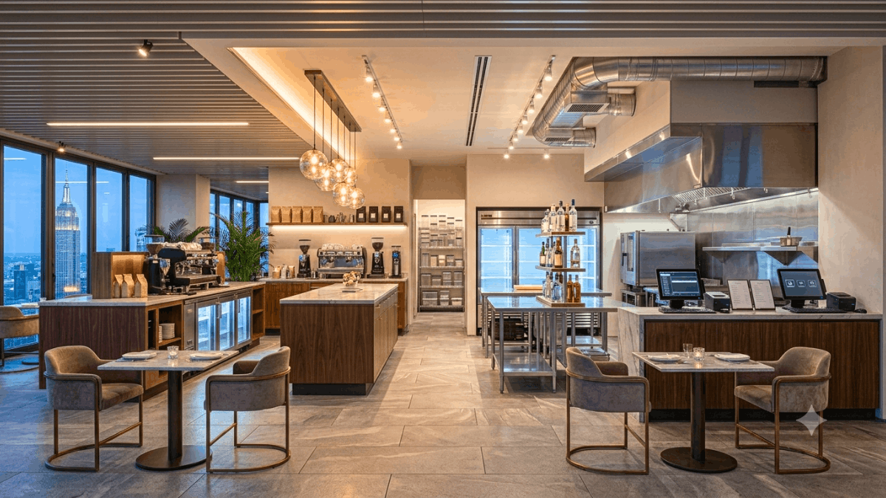

Restaurant Design and Build Specialists
Forty-five days from vacant space to open doors sounds aggressive.
In conventional restaurant fit-out terms, it is. A traditional build process design, documentation, council consent, tender, and construction typically runs four to six months for a mid-scale cafe or restaurant. For operators who have signed a lease and are watching rent accrue on a space, that timeline is painful.
But 45 days is achievable consistently, not occasionally, when the design and build process is engineered specifically for speed without sacrificing the quality that a hospitality venue needs to compete. It is what SprintCo and FlatpackCo do together. SprintCo designs the space; FlatpackCo builds it. Both processes run in parallel, with a methodology developed specifically to compress the timeline without the corners-cutting that makes fast fit-outs look fast and feel cheap.
This is what those 45 days actually look like.

Why Most Fit-Outs Take So Long
Before the timeline, it’s worth understanding what makes conventional fit-outs slow because the 45-day methodology is built around eliminating exactly those delays.
Traditional fit-outs are sequential. Design is completed, then documented, then tendered, then built. Each phase waits for the previous one to finish. If a design decision is made late or a product is specified that has a long lead time, the whole programme shifts. Tradespeople are booked reactively rather than in advance. On-site decisions that could have been resolved in the design phase get made during construction at three to five times the cost and with programme implications.
The SprintCo and FlatpackCo approach collapses this sequence. Design and build planning run concurrently from week one. FlatpackCo’s construction methodology, prefabricated joinery, modular bar systems, and a trades network that is pre-mobilized rather than tendered from scratch, means that building starts faster and moves faster once it does.

The 45-Day Timeline
Days 1-7: Brief, Site, and Concept Lock
The first week is the most important. Everything that follows depends on decisions made here being clear, complete, and final.
SprintCo conducts a full site measure and condition report, assesses services (power, gas, water, drainage, ventilation), and identifies any compliance obligations that will affect the programme. Simultaneously, the client brief is locked concept, menu scope, seating numbers, equipment list, and budget parameters. No ambiguity. No “we’ll work that out later.”
By the end of day seven, the concept direction is agreed upon, and the spatial layout is in draft. FlatpackCo begins procurement planning for long-lead items, joinery, fixed seating, and kitchen equipment based on the draft layout, before the design is fully resolved. This overlap is where the time saving begins.
What can delay this phase: An incomplete brief. Operators who arrive at this stage without a settled menu, a confirmed equipment list, or a clear position on their budget will push every subsequent milestone. The 45-day timeline requires a decisive client as much as a fast design and build team.
Days 8-18: Design Resolution and Construction Preparation
SprintCo finalises the floor plan, lighting design, material selections, and joinery specifications. For a 45-day programme, material specifications are drawn from FlatpackCo’s pre-qualified supplier network products with known lead times, known quality, and known installation requirements. Custom or long-lead specifications are flagged immediately and either substituted or scheduled around.
FlatpackCo finalises the construction programme, books trades, and begins fabrication of any off-site joinery elements. Bar structures, banquette frames, and cabinetry that can be built in a workshop and delivered to the site ready to install are in production before the existing fit-out has been fully demolished.
Council consent, where required, is lodged during this phase. For works that fall within permitted development parameters, which many cafe and bar fit-outs do, particularly in existing tenancies, consent is not required, and this step is bypassed entirely.

Days 19-35: The Build
Site handover to FlatpackCo typically occurs at the end of week two or the start of week three. From this point, the construction sequence is tightly programmed: demolition and strip-out, structural modifications if required, mechanical and electrical first fix, plumbing, kitchen installation, joinery installation and fit-out, finishes, and electrical second fix and commissioning.
The FlatpackCo model keeps this phase moving through two mechanisms. First, trades are sequenced with no gaps. The programme is built to keep every tradesperson productive every day on site, rather than the stop-start sequencing that characterizes most commercial fit-outs. Second, the prefabricated joinery and bar system means that what would typically be four to six weeks of on-site carpentry and joinery work is compressed into days of installation.
SprintCo maintains design oversight throughout the build, reviewing progress, answering on-site queries within hours rather than days, and making the rapid decisions that keep the programme on track. The design and build teams operate as one during construction, not as separate parties communicating through formal channels.
Days 36-42: Finishes, Fixtures, and FFE
The final fit-out phase covers everything that makes a space look and feel complete: lighting installation and commissioning, furniture placement, signage, decorative elements, soft furnishings, and any artwork or bespoke features.
This is also the phase for kitchen commissioning, testing all equipment, calibrating refrigeration, verifying ventilation performance, and completing the health inspection sign-off that most jurisdictions require before trading. Building in adequate time for commissioning is a detail that fast-track fit-outs sometimes sacrifice, creating opening-day operational problems that were entirely avoidable.
SprintCo conducts a design walkthrough at the end of this phase, a snagging inspection that captures any finish, fixture, or installation detail that doesn’t meet the design intent. FlatpackCo resolves snagging items before practical completion is signed off.
Days 43-45: Soft Open and Handover
A three-day soft opening window before the public launch allows the team to operate in the new space, identify workflow issues, and make any minor adjustments before full service begins. This period is built into the 45-day timeline deliberately; it is not a buffer, it is a programme feature.
The difference between a venue that opens on day 45 feeling polished and confident and one that opens feeling underprepared is almost always whether the team had any time to operate in the space before guests arrived.
What the 45-Day Model Requires From You
The timeline is real, but it places genuine demands on the operator as well as the design and build team.
A settled brief from day one. Menu, concept, equipment, and budget are locked before the programme starts. Mid-programme changes are the single most common cause of timeline blowouts in fast-track fit-outs.
Rapid decision-making. During the build phase, on-site queries need answers within hours. Operators who are unavailable or slow to decide push the programme daily.
Pre-ordered equipment. Commercial kitchen equipment, espresso machines, ovens, refrigeration, and extraction systems can have lead times of four to eight weeks. Equipment needs to be ordered in the first week of the programme, not when the kitchen is ready to receive it.
A confirmed lease and services. The 45 days assume a site that is legally accessible and has confirmed services available. Lease negotiations, service upgrades, or landlord works running in parallel will affect the timeline.

Is 45 Days Right for Every Project?
Not every fit-out suits a 45-day programme. Complex structural works, heritage buildings, large floor areas, or venues requiring significant council consent processes will need longer, and attempting to compress a genuinely complex project into 45 days produces a rushed outcome rather than a fast one.
The 45-day model is purpose-built for: new cafe fit-outs in existing tenancies, restaurant refreshes and partial renovations, small to mid-scale bar fit-outs, and food and beverage concepts in retail or mixed-use developments. For these projects, the methodology is proven, the timeline is reliable, and the result is a venue that opens quickly without looking like it was built quickly.
SprintCo and FlatpackCo: Design and Build, Together
The reason the 45-day timeline works is that SprintCo and FlatpackCo operate as a genuinely integrated team, not as a designer and a builder working from the same brief, but as two parts of a single process that was designed from the ground up to move fast.
If you have a site, a concept, and a date you need to open by, that’s enough to start the conversation.
Talk to SprintCo and FlatpackCo. Day one is whenever you’re ready.
SprintCo & FlatpackCo | Design and Build for Restaurants, Cafes, and Bars.
Pan-India presence | 3500+ F&B spaces delivered — Visit SprintCo’s Website